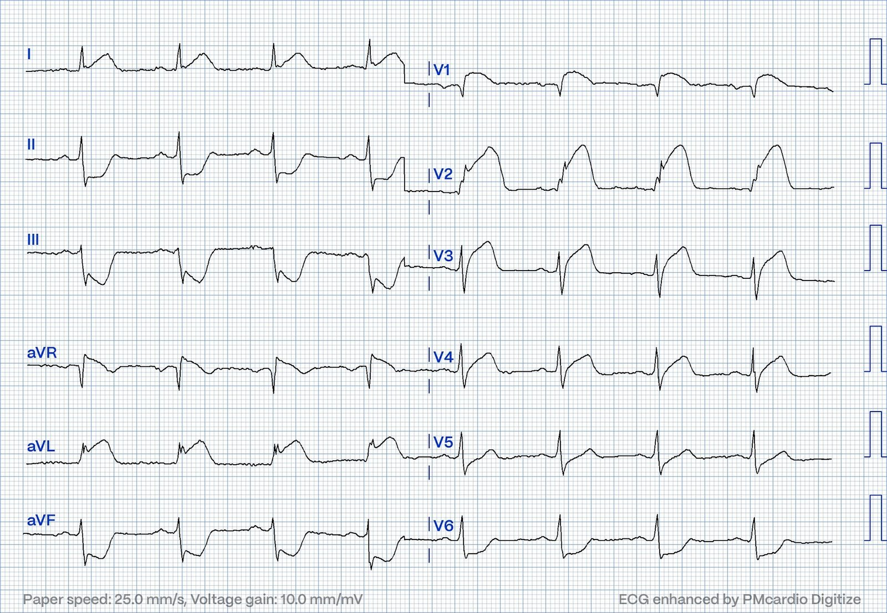
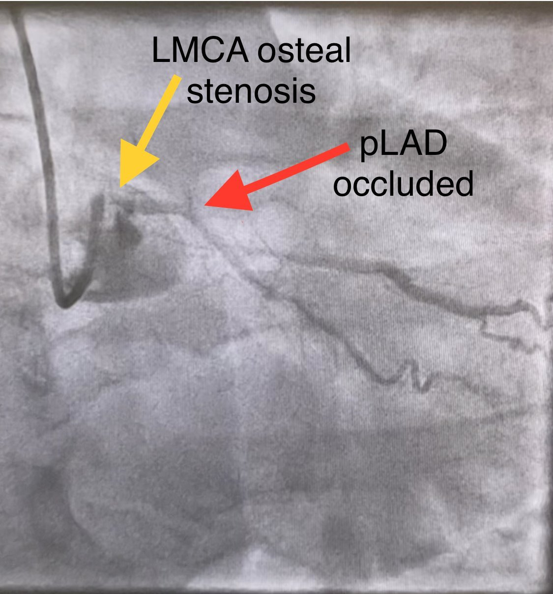
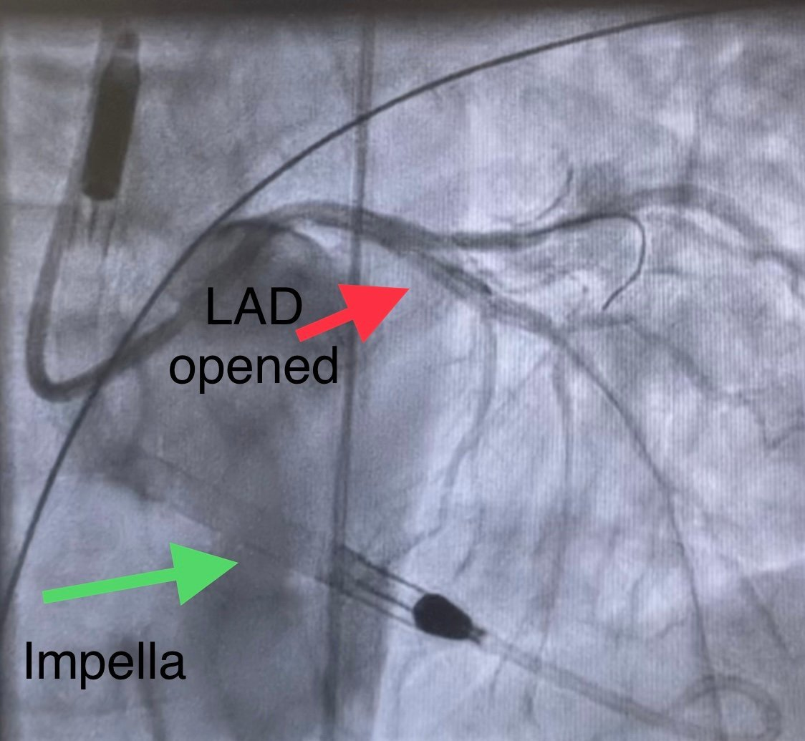
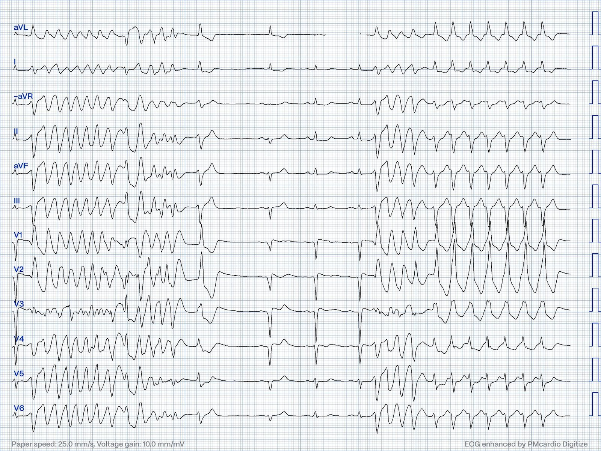
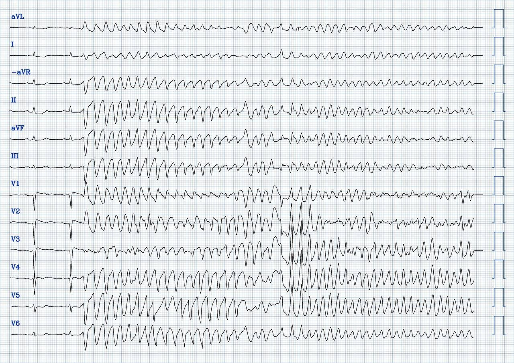
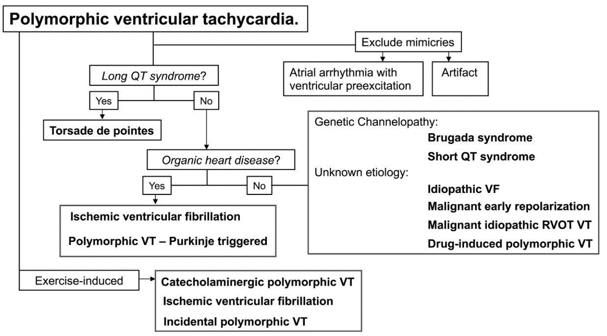
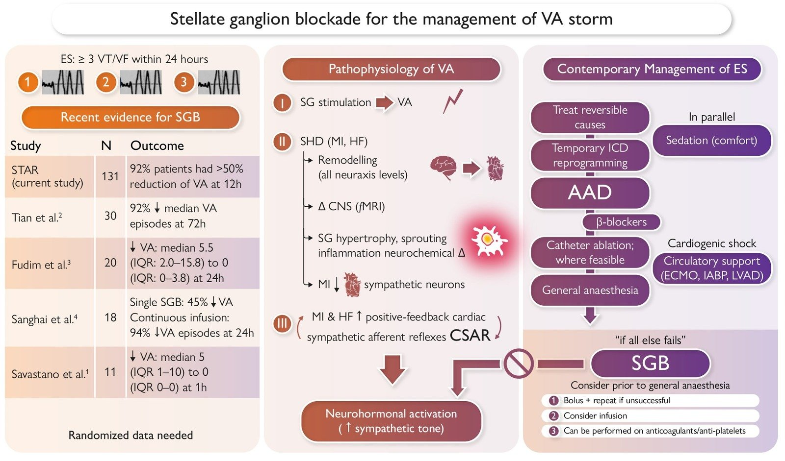
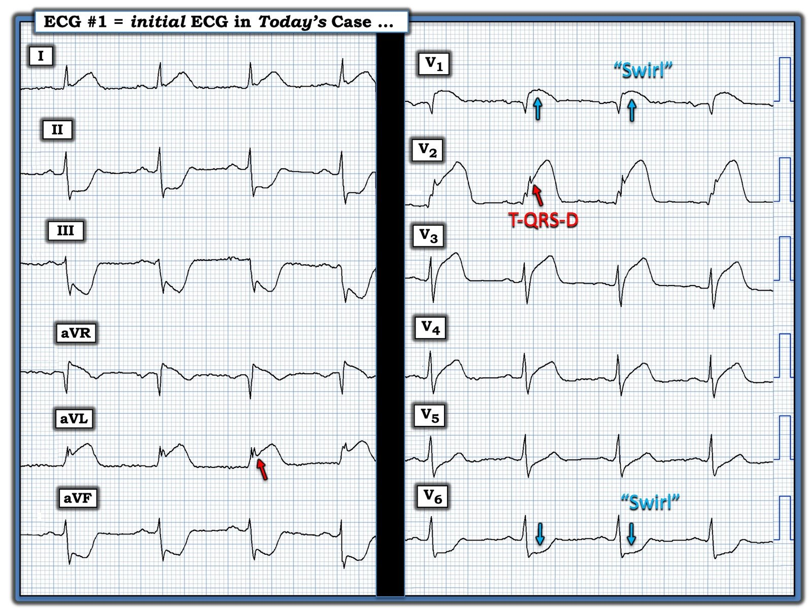

21/07/2024 — Lựa chọn điều trị nào cho nhịp này khi mọi biện pháp khác đều thất bại?
Bản dịch tiếng Việt của bài "What are treatment options for this rhythm, when all else fails?" – Dr. Smith’s ECG Blog. Giữ nguyên toàn bộ 11 hình ảnh của bản gốc.

Tác giả: Magnus Nossen — có chỉnh sửa bởi Ken Grauer và Smith.
Bệnh nhân trong ca hôm nay là một nam giới khoảng 40 tuổi, trước đây khỏe mạnh, đã gọi đội cấp cứu ngoài viện (EMS) vì
đau ngực kiểu bóp nghẹt khởi phát đột ngột. Cơn đau có cường độ 10/10, lan
ra hai vai, đồng thời lan ra cánh tay trái và cổ. Điện tâm đồ dưới đây
đã được ghi.


Điện tâm đồ cho thấy rõ OMI STEMI dương tính (STEMI(+) OMI) do nhiều khả năng tắc LAD đoạn gần.
Mức độ và sự phân bố của ST chênh lên và ST chênh xuống rất đáng lo ngại. Có ST chênh lên
rất lớn ở chuyển đạo V1 và V2, với mức độ ST chênh lên giảm dần
về phía V4. Các chuyển đạo II, III, aVF và V6 đều có ST
chênh xuống nhiều. Chuyển đạo I có ST chênh lên (STE) nhẹ và sóng T tối cấp — trong khi chuyển đạo aVL có ST chênh lên đáng kể. Điện tâm đồ này không có vectơ ST điển hình của tắc LAD.
==============================
Xem bên dưới Bình luận của Ken Grauer về điện tâm đồ ban đầu:
======================================
Ca bệnh tiếp diễn: Bệnh nhân được nhận để làm PCI tiên phát. Khi đến, bệnh nhân trông rất nặng, tụt huyết áp, da lạnh và ẩm. Bệnh nhân được đưa ngay vào phòng thông tim (cath lab). Dưới đây là hình chụp mạch ban đầu. Hình cho thấy tắc LAD đoạn gần, kèm theo LMCA (thân chung động mạch vành trái — Left Main Coronary Artery) tắc gần hoàn toàn. RCA tắc ở đoạn gần, được làm đầy ngược dòng từ LCx. Có thể thấy thuốc cản quang hiện lên rất kém trên hình dưới đây, cho thấy dòng thuốc cản quang qua LMCA bị hẹp đã giảm nặng.


Có thể thấy tắc nghẽn thân chung và LAD đoạn gần, nhưng vẫn còn một ít dòng chảy — chính điều này đang cứu sống bệnh nhân.
Ngay sau khi bơm thuốc cản quang vào LMCA, bệnh nhân bị
trụy tuần hoàn, huyết áp tụt đột ngột. Truyền epinephrine được bắt đầu. Một thiết bị Impella được đặt để duy trì
cung lượng tim và áp lực tưới máu. Sau đó tiến hành PCI LMCA và LAD.
Dưới đây là hình chụp mạch sau PCI (góc chụp hơi khác, điều này giải thích vì sao lúc này LAD nằm bên dưới LCx). Hình cho thấy thiết bị Impella đã nằm
đúng vị trí. Sau PCI — dòng chảy ở thân chung, LAD và LCx đạt mức chấp nhận được.


Chụp mạch vành:
- LMCA — hẹp lỗ xuất phát (ostial) 90-99%.
- LAD — tắc 100% đoạn gần; hẹp 70-89% đoạn giữa.
- LCx — hẹp 50-69% nhánh bờ thứ 1; tắc 100% LCx đoạn xa.
- RCA — tắc 100% đoạn gần.
Bệnh nhân trong ca hôm nay vào viện trong tình trạng sốc tim do tắc LAD
đoạn gần, kèm theo LMCA hẹp gần hoàn toàn. RCA tắc ở đoạn gần — và được làm đầy ngược dòng từ các mạch vành bên trái. Khi bơm thuốc cản quang vào LMCA, bệnh nhân xấu đi, vì LMCA bị bệnh rất nặng và dòng chảy tới tất cả các động mạch vành (LAD, LCx và RCA) đều bị ảnh hưởng.
Sau PCI — bệnh nhân trở nên không hợp tác và kích động, cần phải
đặt nội khí quản. Trong vài ngày tiếp theo, bệnh nhân được cai dần hỗ trợ tuần hoàn cơ học. Thuốc tăng co bóp cơ tim vẫn được tiếp tục. Troponin T đạt đỉnh 38.398 ng/L ( = một ổ nhồi máu
cơ tim rất lớn)
Các hình siêu âm tim dưới đây được ghi vào ngày nhập viện, sau PCI. Chức năng
tim kém, vô động vùng LAD. Có thể thấy ống thông Impella nằm trong đường ra thất trái (LVOT).
Dưới đây là siêu âm tim ghi lại của thất trái ở mặt cắt 4 buồng từ mỏm. (Siêu âm này được ghi vài ngày sau đó). Khi so sánh — có thể thấy rõ sự khác biệt về co bóp ở vùng LAD, cũng như chức năng tâm thu chung của thất trái.
Bệnh nhân được rút nội khí quản vào ngày thứ 3 nằm viện. Không may, vài ngày sau bệnh nhân phải đặt lại nội khí quản do suy hô hấp vì viêm phổi nặng hai bên. Thời gian nằm tại đơn vị hồi sức tim mạch (CICU) còn có thêm biến chứng nhiễm khuẩn huyết, mê sảng, xuất huyết tiêu hóa và suy thận vô niệu cần điều trị thay thế thận.
Bệnh nhân cải thiện, và vào ngày thứ 11 nằm viện — đã ngưng thuốc tăng co bóp và đang dùng một liều nhỏ thuốc chẹn ß. Tuy nhiên, bệnh nhân đột ngột xuất hiện một loạt rối loạn nhịp thất ác tính. Tình trạng này tiến triển thành cơn bão điện, với nhịp nhanh thất đa dạng (PMVT) dai dẳng liên tục (incessant) và các cơn rung thất (VFib) tái diễn. Bệnh nhân phải khử rung nhiều lần trong vòng vài giờ. Dưới đây là bản in một số rối loạn nhịp đã ghi được. Bạn nghĩ
gì?


Điện tâm đồ trên cho thấy một loạt PMVT tự kết thúc. Tiếp theo là 3 nhát dẫn truyền từ xoang — trước khi một loạt PMVT khác xuất hiện. Cả hai cơn đều được khởi phát bởi hiện tượng “R trên T”. Các nhát dẫn truyền từ xoang cho thấy nhồi máu cơ tim thành trước đã hoàn tất, với sóng QS ở các chuyển đạo trước tim. Không có bằng chứng chắc chắn của thiếu máu cục bộ cấp. (tức là không có ST chênh lên quá mức hay sóng T tối cấp). Hình thái QRS ở các chuyển đạo V1 đến V3 có những đặc điểm giống hình thái Brugada.
Tiếp theo là bản ghi dưới đây:


Điện tâm đồ 12 chuyển đạo trên cho thấy một cơn PMVT khác. Lần này, rối loạn nhịp không tự kết thúc — mà thoái biến thành VFib, phải khử rung.
===============================
Bàn luận:
Bệnh nhân hôm nay có nhiều cơn PMVT và VFib. Các nhát dẫn truyền từ xoang trong những ví dụ trên cho thấy khoảng QTc bình thường. Đây là một phát hiện quan trọng liên quan đến nguyên nhân và điều trị các rối loạn nhịp ác tính này — vì theo định nghĩa, PMVT kèm QTc kéo dài được xếp loại là xoắn đỉnh (Torsades de Pointes) (và có khuyến cáo điều trị khác).
Sơ đồ phân nhóm dưới đây điểm lại cách phân loại các thể PMVT:


Trong ca hôm nay — các nhát dẫn truyền từ xoang trước và giữa các cơn PMVT cho thấy bằng chứng nhồi máu cơ tim thành trước đã hoàn tất. Dù vậy — không có bằng chứng trên điện tâm đồ về tắc lại động mạch liên quan đến nhồi máu. Trên cả hai bản ghi — ghi nhận một cơn
PMVT cực nhanh. Rối loạn nhịp
bắt đầu bằng một PVC có khoảng ghép ngắn. Các khoảng R-R của VT dưới
200ms và tần số thất > 300 lần/phút! (Trong ca này, việc phân biệt PMVT với VFib chỉ mang tính học thuật). Cả PMVT và VFib đều xảy ra nhiều lần. Một số cơn PMVT tự kết thúc — nhưng trong nhiều
lần, PMVT thoái biến thành VFib, phải khử rung.
Tình huống trong ca hôm nay là một nam giới trẻ bệnh rất nặng với cơ tim cực kỳ bất ổn về điện. Nói đơn giản — bệnh nhân có PMVT tái diễn không kèm QTc kéo dài, và không có bằng chứng thiếu máu cục bộ xuyên thành đang diễn ra. (Nếu có các dấu hiệu trên điện tâm đồ cho thấy động mạch tắc lại — thì chụp mạch vành là cần thiết). Có thể vẫn còn một phần thiếu máu cục bộ tồn dư ở vùng ven ổ nhồi máu. Không có bằng chứng nhịp chậm dẫn đến các loạt PMVT (như thường thấy với xoắn đỉnh). Nếu có — có thể đã cân nhắc đặt máy tạo nhịp nhĩ tạm thời để tăng tần số tim nhằm ức chế rối loạn nhịp phụ thuộc nhịp chậm (“tạo nhịp vượt tần số” — overdrive pacing).
CÂU HỎI:
- Bạn sẽ xử trí rối loạn nhịp này thế nào trong bối cảnh lâm sàng như vậy?
LƯU Ý: Bệnh nhân này đã đang dùng thuốc chẹn ß liều thấp. Amiodarone tĩnh mạch đã được chỉ định — nhưng không làm giảm tần suất ngoại tâm thu thất hay số cơn VT. Bệnh nhân tiếp tục trong cơn bão
loạn nhịp với các cơn PMVT và VFib tái diễn.
- Còn những lựa chọn điều trị nào khác?
Suy nghĩ của chúng tôi:
PMVT dai dẳng liên tục (incessant) nổi tiếng là khó điều trị. Rối loạn nhịp này có thể kháng với sốc điện chuyển nhịp — và thường đáp ứng kém với thuốc chống loạn nhịp so với VT đơn dạng. Nên thử thuốc chẹn ß tác dụng ngắn liều cao. Có thể dùng thuốc chẹn ß tác dụng cực ngắn như Esmolol bằng truyền tĩnh mạch (tức là liều nạp 500mcg/kg — sau đó truyền 50mcg/kg/phút). Do thời gian bán thải ngắn, thuốc dễ dàng được chỉnh liều và/hoặc ngưng nếu bệnh nhân không dung nạp. Đặt nội khí quản và an thần bằng propofol là cần thiết nếu chưa làm, nhằm giảm hoạt động giao cảm và giảm khó chịu cho bệnh nhân.
Bệnh nhân hôm nay bị tụt huyết áp và vừa mới được cai hỗ trợ bằng thuốc tăng co bóp. Metoprolol tĩnh mạch đã được dùng nhưng không có tác dụng rõ rệt lên tần suất ngoại tâm thu và rối loạn nhịp. Bệnh nhân đã được đặt nội khí quản và an thần sẵn. Quyết định được đưa ra là thử Quinidine (vì ca này được cho là phù hợp với tình trạng PMVT đáp ứng với Quinidine).
PMVT đáp ứng với Quinidine — là một thực thể đã được mô tả rõ (Viskin và cs. — Circulation 139(20), 2019 — và — Viskin và cs. — Circulation 144(10), 2021) — xảy ra trong “giai đoạn lành sẹo” sau nhồi máu cơ tim cấp, trong đó rối loạn nhịp khởi phát
từ các tế bào Purkinje (điều này giải thích vì sao rối loạn nhịp thất này thường đáp ứng rất tốt với các thuốc nhóm 1A như Quinidine). Về cơ chế — Quinidine là thuốc chẹn mạnh dòng kali đi ra thoáng qua (transient outward potassium current). Điều này có ý nghĩa vì các kênh của dòng kali đi ra thoáng qua được biểu hiện rất nhiều ở các sợi Purkinje.
- Ngược lại, điều trị quy ước loại rối loạn nhịp thất này bằng các thuốc như chẹn ß, Amiodarone, Magnesium và Lidocaine — thường xuyên thất bại.
- Các nghiên cứu trên bệnh nhân bệnh động mạch vành xuất hiện cơn bão loạn nhịp với các cơn PMVT sau nhồi máu cơ tim — cho thấy những rối loạn nhịp không thể phân biệt với rối loạn nhịp được báo cáo trong ca này. Trong những trường hợp đó — cần triệt đốt bằng sóng có tần số radio các nhát ngoại tâm thu khởi kích rối loạn nhịp thất ác tính để kiểm soát cơn bão loạn nhịp, vì các thuốc chống loạn nhịp đã thử đều không hiệu quả (Marrouche và cs. — JACC 5;43(9): 1715-20, 2004).
- Điều đáng chú ý — các nhát ngoại tâm thu khởi kích PMVT/VFib trong những nghiên cứu này thường được lập bản đồ tại các vị trí nội tâm mạc có điện thế Purkinje nằm trong sẹo cơ tim — gợi ý khả năng đáp ứng với một thuốc nhóm 1A (Nogami — Pacing Clin Electrophysiol 34(8): 1034-1049, 2011).
Bệnh nhân hôm nay được bắt đầu dùng Quinidine-Sulfate đường uống (400mg x 4 lần/ngày) — và tất cả các cơn PMVT và VFib nhanh chóng chấm dứt. Trong một ca như ca hôm nay, mọi chống chỉ định đều chỉ là tương đối nếu thuốc bạn đang dùng có hiệu quả, vì bệnh lý nền bạn đang điều trị sẽ gây tử vong nếu không được kiểm soát.
Tác dụng phụ thường gặp nhất của Quinidine là tụt huyết áp và QTc kéo dài. Đây cũng là những dấu hiệu được báo cáo nhiều nhất trong các trường hợp quá liều gây ngộ độc, trong đó rối loạn nhịp thất được báo cáo là nguyên nhân tử vong hàng đầu. Thông tin còn rất ít về việc thế nào là liều gây độc. Các con số đưa ra chủ yếu dựa trên báo cáo ca bệnh. Đã có báo cáo tử vong khi một trẻ nhỏ uống 5 gam, trong khi một trẻ vị thành niên vẫn sống sót sau khi uống 8 gam.
Còn Procainamide thì sao?
Nghiên cứu PROCAMIO đưa vào các bệnh nhân VT ổn định huyết động. Trong nghiên cứu này — Procainamide vượt trội hơn Amiodarone trong cắt cơn VT đơn dạng, đồng thời ít tác dụng bất lợi hơn Amiodarone (Ortiz và cs. — Eur Heart J 1;38 (17): 1329-1335, 2017).
Procainamide, cũng như Quinidine, là thuốc chống loạn nhịp nhóm 1A. Vì Procainamide không được lưu hành ở Na Uy — tôi không có kinh nghiệm sử dụng thuốc này.
- Ở Hoa Kỳ (và ở những nơi khác không sẵn có Quinidine) — Procainamide có vẻ là lựa chọn được khuyến nghị để cân nhắc cho các rối loạn nhịp như trong ca hôm nay, đặc biệt nếu không đáp ứng với phác đồ chống loạn nhịp thông thường.
===============================
Bình luận của Smith: Tôi đồng ý với việc bắt đầu bằng một thuốc chẹn beta như esmolol, vì đây nhiều khả năng là một tình trạng tăng catecholamine. Một cách tiếp cận khác là phong bế chuỗi giao cảm (phong bế hạch sao) nếu bạn có kỹ năng thực hiện: thủ thuật này đòi hỏi chuyên môn nhất định và hướng dẫn bằng siêu âm. Nếu các biện pháp này không hiệu quả, thì thuốc chống loạn nhịp nhóm 1A chắc chắn là một lựa chọn hợp lý (procainamide, hoặc ở Na Uy là quinidine). Liều dùng Procainamide là 10-17 mg/kg với tốc độ 20 mg/phút. Một liều 1000 mg sẽ mất 50 phút.) Nên truyền cho đến khi: 1) đạt hiệu quả tốt, hoặc 2) tụt huyết áp, hoặc 3) thời gian QRS tăng lên 1,5 lần so với ban đầu (đây là điều đa số khuyến nghị, nhưng với tôi thì mức giãn rộng QRS này có vẻ quá nhiều)
===============================
Xem các bài báo này và hình minh họa này:
1. A Multicenter Study of Stellate Ganglion Block as a Temporizing Treatment for Refractory Ventricular Arrhythmias (Nghiên cứu đa trung tâm về phong bế hạch sao như một biện pháp điều trị tạm thời cho rối loạn nhịp thất kháng trị)
2. Stellate ganglion blockade for the management of ventricular arrhythmia storm (Phong bế hạch sao trong xử trí cơn bão rối loạn nhịp thất)


KẾT LUẬN CA BỆNH:
Bệnh nhân hôm nay cuối cùng đã hồi phục hoàn toàn — và được xuất viện về nhà. Một ICD (máy khử rung tim cấy được) đã được đặt trước khi xuất viện. Quinidine sau đó đã phải ngừng do bệnh nhân xuất hiện thiếu máu tan máu. Không có thêm thông tin theo dõi.
Những điểm cần học
- PMVT sau nhồi máu cơ tim có thể rất khó điều trị. Quinidine (hoặc có lẽ Procainamide nếu không có Quinidine) có thể được cân nhắc như một lựa chọn cho các trường hợp kháng trị, đặc biệt nếu các biện pháp khác đã thử không hiệu quả.
- Khi xử trí các cơn PMVT tái phát — việc chú ý tới khoảng QTc của các nhát dẫn truyền từ xoang là thiết yếu để phân biệt xoắn đỉnh (Torsades) với các loại PMVT khác.
Bài tổng quan này về các thuốc chống loạn nhịp rất đáng đọc

===================================
BÌNH LUẬN CỦA TÔI, bởi KEN GRAUER, MD (21/7/2024):
===================================
Một bài viết hấp dẫn của BS. Nossen — trong đó anh bàn về một ca VT dai dẳng liên tục (incessant) với nhiều cơn PMVT/rung thất xảy ra sau nhồi máu cơ tim, ở một bệnh nhân có QTc bình thường, không đáp ứng với điều trị chống loạn nhịp thông thường — nhưng lại đáp ứng ngay lập tức khi điều trị bằng Quinidine! (Xem Lưu ý bổ sung của tôi bên dưới).
- Tôi tập trung bình luận vào điện tâm đồ ban đầu trong ca hôm nay — mà tôi đã đưa lại và đánh dấu ở Hình 1.
Tính chất ấn tượng của điện tâm đồ ở Hình 1 hiện rõ ngay lập tức. Tôi xin lưu ý các điểm sau:
- Hình ảnh ít nhất là tắc LAD đoạn gần — thể hiện rõ qua ST chênh lên rõ rệt bắt đầu từ chuyển đạo V1 — đạt biên độ tối đa ở chuyển đạo V2 — và kéo dài đến chuyển đạo V4.
- Tắc động mạch vành trái đoạn gần được củng cố bởi các dấu hiệu ở chuyển đạo chi: ST chênh lên rõ rệt ở chuyển đạo aVL (kèm sóng ST-T tối cấp ở chuyển đạo I) — và ST chênh xuống soi gương còn ấn tượng hơn ở từng chuyển đạo thành dưới.
- Kết quả thông tim được trình bày ở trên trong phần bàn luận của BS. Nossen xác nhận bệnh nhiều nhánh mạch vành, bao gồm hẹp 90-99% lỗ xuất phát của LMCA. Như chúng tôi vẫn thường nhấn mạnh trên Dr. Smith’s ECG Blog — trên thực tế hiếm khi thấy tắc LMCA, vì phần lớn những bệnh nhân như vậy tử vong trước khi tới được bệnh viện. Tuy vậy, bệnh cảnh này vẫn thỉnh thoảng xảy ra — và điều quan trọng là phải nhận biết biểu hiện điện tâm đồ của nó. Như tôi đã điểm lại trong Bình luận của tôi ở bài đăng ngày 16 tháng Một năm 2020 trên Dr. Smith’s ECG Blog (và đã đưa lại ở Hình 2 bên dưới) — điện tâm đồ của bệnh nhân tắc LMCA cấp có thể rất đa dạng. Hình ảnh ST-T chênh lên và chênh xuống lan rộng hôm nay (kèm ST chênh lên ở chuyển đạo aVR) — phù hợp với một trong các hình ảnh này.
Dù rõ ràng là không cần thiết cho chẩn đoán — điện tâm đồ ban đầu hôm nay là một bản ghi mang tính giáo dục ở chỗ nó minh họa:
- “Xoáy“ trước tim (Precordial Swirl) — về hình ảnh này, BS. Meyers và Smith đã minh họa 20 ca ví dụ so với các ca “trông giống” Xoáy (kèm phần tổng hợp của tôi về các dấu hiệu điện tâm đồ của “Xoáy” trong Bình luận của tôi ở bài đó) trong bài ngày 15 tháng Mười năm 2022. Ở Hình 1 của ca hôm nay — ST chênh lên dạng vòm ở chuyển đạo V1 so với ST chênh xuống ngược chiều gần như soi gương ở chuyển đạo V6 là một ví dụ về thiếu máu cục bộ vách cấp rõ rệt nhất mà tôi từng gặp.
- T-QRS-D (biến dạng phần cuối QRS – Terminal-QRS–Distortion) — với các mũi tên ĐỎ của tôi làm nổi bật một ví dụ về T-QRS-D rõ rệt nhất mà tôi từng gặp. BS. Smith và Meyers nhấn mạnh rằng dấu hiệu điện tâm đồ này có giá trị chẩn đoán OMI cấp khi thấy ở chuyển đạo V2 và/hoặc V3 (và có lẽ cả ở chuyển đạo V4) — dù hình ảnh T-QRS-D thấy ở chuyển đạo aVL của Hình 1 rõ ràng cũng kể một câu chuyện tương tự (Xem Bình luận của tôi ở cuối trang trong bài đăng ngày 14 tháng Mười Một năm 2019 trên Dr. Smith’s ECG Blog — để có mô tả minh họa về T-QRS-D).


===================================
Dưới đây ở Hình 2 — tôi đưa lại Bảng từ Bình luận của tôi ở bài đăng ngày 16 tháng Một năm 2020 trên Dr. Smith’s ECG Blog, nêu bật các dấu hiệu điện tâm đồ có thể gặp của tắc LMCA cấp.

======================================
Lưu ý bổ sung:
Quinidine có lịch sử sử dụng lâu dài để điều trị rối loạn nhịp tim và sốt rét nặng. Theo hiểu biết của tôi, dạng tiêm tĩnh mạch của Quinidine không còn sẵn có (nếu còn được sản xuất) ở Hoa Kỳ. Ở bệnh nhân hôm nay (được điều trị tại Na Uy) — đã dùng Quinidine đường uống.
- Quinidine đường uống có dạng sulfat hoặc gluconat. Các dạng uống tác dụng nhanh bắt đầu có tác dụng trong vòng 1-3 giờ. Tác dụng phụ thường gặp nhất là trên tiêu hóa (tiêu chảy, buồn nôn, nôn) — và chúng thường là yếu tố giới hạn việc dùng thuốc.
- Các tác dụng phụ chính trên tim của Quinidine gồm giãn rộng QRS và QTc kéo dài. Khi dùng lâu dài có thể gặp — nhịp chậm, rối loạn dẫn truyền AV và nguy cơ xoắn đỉnh (Torsades de Pointes) (đặc biệt ở bệnh nhân đồng thời dùng Digoxin). Có thể gặp các tác dụng phụ khác (Bệnh nhân hôm nay cuối cùng đã phải ngừng thuốc do thiếu máu tan máu).
- Dù từng được dùng rộng rãi như một thuốc chống loạn nhịp trước đây ở Hoa Kỳ — hồ sơ tác dụng phụ của Quinidine, cùng hiệu quả cao hơn của các thuốc chống loạn nhịp khác, đã hạn chế việc dùng Quinidine lâu dài (ít nhất là ở Hoa Kỳ) cho mục đích này. Dù vậy — thuốc đã mang lại hiệu quả kỳ diệu trong điều trị bệnh nhân hôm nay! (người vốn có rối loạn nhịp thất kháng trị với các biện pháp khác!).
Procainamide tĩnh mạch được sử dụng ở Hoa Kỳ.
- Trong những năm tôi sử dụng thuốc này — phác đồ liều tôi ưa dùng là tiêm tĩnh mạch chậm 100 mg trong 5 phút (với tốc độ ~20 mg/phút) — cho đến khi đạt một trong các tiêu chí dừng sau: i) Rối loạn nhịp bị ức chế; ii) Xuất hiện tụt huyết áp; iii) QRS giãn rộng thêm 50%; — và/hoặc — iv) Đã dùng tổng liều nạp 500-1.000 mg. Sau đó có thể truyền tĩnh mạch duy trì 2 mg/phút (khoảng 1-4 mg/phút).
- LƯU Ý: Dù tốc độ truyền tối đa của Procainamide tĩnh mạch được giới hạn ở 50 mg/phút — các tác dụng phụ (tức là tụt huyết áp, nhịp chậm, giãn rộng QRS) ít hơn khi truyền với tốc độ chậm hơn (tức là khoảng ~20 mg/phút).